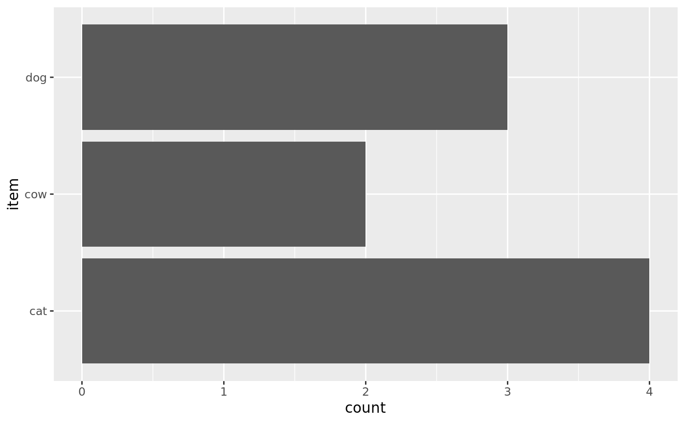

Constructs S3 class for pensieve.
psOpenSorts(open_sorts) # S3 method for psLogicalOpenSorts tidy(x) # S3 method for psLogicalOpenSorts autoplot(object, by = "item")
| open_sorts | A list of matrices, one for each participant.
Matrices must be |
|---|---|
| x | a psOpenSorts, created by |
| object | a psLogicalOpenSorts, created by |
| by | a character string, must be one of:
|
Object of class psOpenSorts.
Open sorting categorizations cannot be compared between participants, because each participants defines her own dimensions.
The canonical representation of open sorting data is therefore a list of matrices, one for each participant.
Every individual matrix is a psOpenSort() object, and together, they form a psOpenSorts() list.
The rows in these matrices are the items, the columns are the dimensions, and cells are the assignment.
Optional dimension descriptions are included as attributes of the matrices.
tidy: Summarize list of open sorts
autoplot: plots Summary
Other S3 classes from pensieve:
correlate(),
extract(),
psClosedSorts(),
psGrid(),
psItemContent(),
psOpenSort(),
psPeople(),
score()
# create single open sort ==== # Lisas open sort, unnamed descriptions (matched by index) losort <- matrix( data = c(TRUE, FALSE, FALSE, FALSE, TRUE, FALSE), nrow = 3, dimnames = list(items = c("cat", "dog", "cow"))) descriptions <- c( "a pet which largely takes care of itself", NA # dimension is assigned, but not described (not a problem) ) lisa <- psOpenSort(osort = losort, descriptions = descriptions) # Peters open sort, named descriptions (*also* only matched by index) losort <- matrix( data = c(TRUE, TRUE, FALSE, TRUE, FALSE, FALSE, FALSE, FALSE, TRUE), nrow = 3, dimnames = list( items = c("cat", "dog", "cow"), categories = c("in_homes", "quiet", "herbivore") )) descriptions <- c( in_homes = "Animal found in peoples homes.", quiet = "Does not make a lot of noise.", herbivore = "Eats plants.") # defined, but never TRUE (not a problem) peter <- psOpenSort(osort = losort, descriptions = descriptions) # coercion methods peter_m <- as_psOpenSort(osort = as.matrix(x = losort), descriptions = descriptions) peter_df <- as_psOpenSort(osort = as.data.frame(x = losort), descriptions = descriptions) # Rebeccas open sort, without any descriptions provided losort <- matrix( data = c(FALSE, FALSE, TRUE, TRUE, TRUE, FALSE), nrow = 3, dimnames = list(handles = c("cat", "dog", "cow"))) rebecca <- psOpenSort(osort = losort, descriptions = NULL) # Ira open sort, with some problems losort <- matrix( data = c( FALSE, FALSE, FALSE, # this is dropped, b/c there is just no valuable information here, TRUE, TRUE, TRUE, # same problem; no variance FALSE, FALSE, FALSE, # also no variance, but there *is* a corresponding description, # so we're setting column to NA and keeping the description NA, TRUE, FALSE), # you can also have *actual* NAs nrow = 3, byrow = FALSE, dimnames = list(handles = c("cat", "dog", "cow")) ) descriptions <- c(NA, NA, "mammals", NA) ira <- suppressWarnings(as_psOpenSort(osort = losort, descriptions = descriptions)) # this gives appropriate warning messages # psOpenSort() would error out; only coercion method will attempt fix # ordinally and intervally scaled sorts are also possible, but currently unsupported tyler <- matrix( data = as.integer(c(1, 2, 2, 1)), nrow = 2, ) tyler <- psOpenSort( osort = tyler, scale = "ordinal") # defaults to implicit class of base type roberta <- matrix( data = c(2.2, 4.3, -2.8, 0), nrow = 2 ) roberta <- psOpenSort(osort = roberta) # Creation ==== # you can combine individual sorts into a list ==== los <- psOpenSorts(open_sorts = list(lisa = lisa, peter = peter, rebecca = rebecca)) # or create psOpenSorts from a more convenient input ==== # recreate messy format from canonical form (don't do this at home) ass <- pensieve:::make_messy(open_sorts = los)$ass desc <- pensieve:::make_messy(open_sorts = los)$desc # these two can be conveniently entered in a spreadsheet program ass#> lisa peter rebecca #> cat "A" "A, B" "B" #> dog "B" "A" "B" #> cow "" "C" "A"desc#> lisa peter #> A "a pet which largely takes care of itself" "Animal found in peoples homes." #> B NA "Does not make a lot of noise." #> C NA "Eats plants." #> rebecca #> A NA #> B NA #> C NAlos_from_messy <- as_psLogicalOpenSorts( logical_open_sorts = ass, descriptions_messy = desc, keep_LETTERS = FALSE) ggplot2::autoplot(object = los)